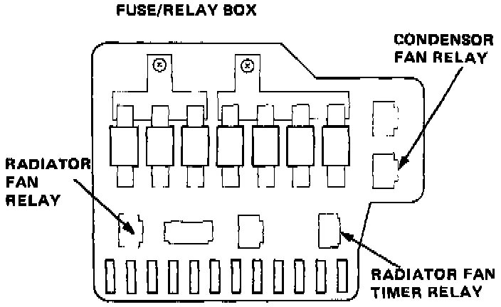
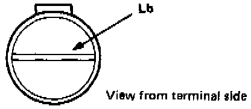
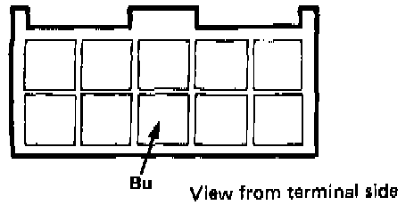
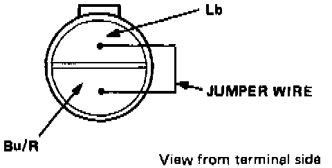
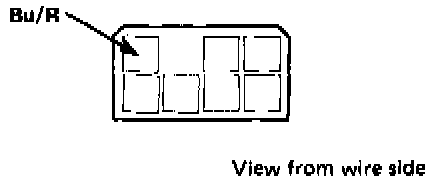
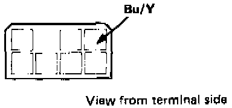
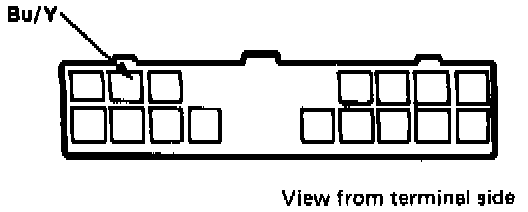
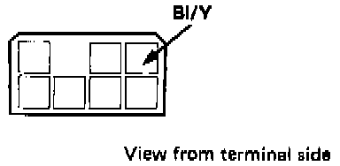
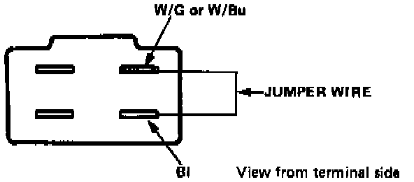

Cooling Fans Do Not Run (AC on)
COOLING FANS DO NOT RUN (A/C ON)
NOTE: If one fan runs and the other doesn't, switch the relays. If the problem changes with the relays, replace the defective one. If the problem remains unchanged, start step 1.
1. Check the No. 22, 26, 33, 37, 38 fuses in engine compartment and the No. 9, 10, 11 fuses in the under-dash fuse box.

2. Disconnect the dual pressure switch connector, then connect the Lb terminal to ground.
Turn the ignition ON: the fan motors should come ON.
- If they do, go to the next step.

- If they do not, connect the Bu Wire at the radiator fan control unit to ground.
- If the fans now come on, test the unit. Testing and Inspection
- If they still do not, go to step 7.

3. Connect a jumper wire between the Lb terminal and Bu/R terminal of the dual pressure switch connector.
Turn the ignition ON: the fan motors should start.
- If the fan motors start, check the A/C system pressure. Refer to Initial Diagnostic Steps / System Pressure Test. Testing and Inspection If OK replace the dual pressure switch and retest.

- If the fan motors do not start, connect the Bu/R wire at the A/C control unit to ground and the fans should now come on.
- If they do, go to the next step.
- If they do not, there is an open in the Bu/R wire between the dual pressure switch and A/C control unit.

4. Connect the Bu/Y terminal at the A/C control unit to ground with ignition ON.
The fans should start.
- If the fans do not start, go to step 5.

- If the fans start, connect the Bu/Y terminal at the control panel to ground with ignition ON. The fans should start.
- If the fan motors start, replace the function control panel and retest.
- If the fan motors do not start, there is an open Bu/Y wire.
5. Check the evaporator sensor. Testing and Inspection
NOTE: An approximate check can be done without removing the sensor, by measuring the resistance between the Or and G/R wires at the A/C control unit connector.
At room temperature the resistance should be approximately 1.8 k ohms.

6. Disconnect the A/C control unit connector, and check the Bl/Y terminal voltage.
- If there is battery voltage with the ignition ON, replace the A/C control unit and retest.
- If not, there is an open in the Bl/Y wire.

7. With a jumper at the fan relay connector, connect the Bl terminal to either the W/Bl (radiator fan) or W/G (condenser fan) terminal.
The fans should start.
- If they do not, there is an open between the fuse and relay or a fan motor is faulty.
- If the fan motor starts, check for battery voltage at the Y/Bl terminal (Ignition ON).
If there is voltage, there is an open in the Bu wire.